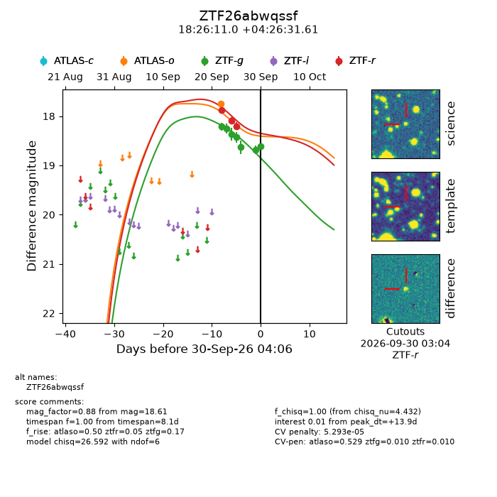
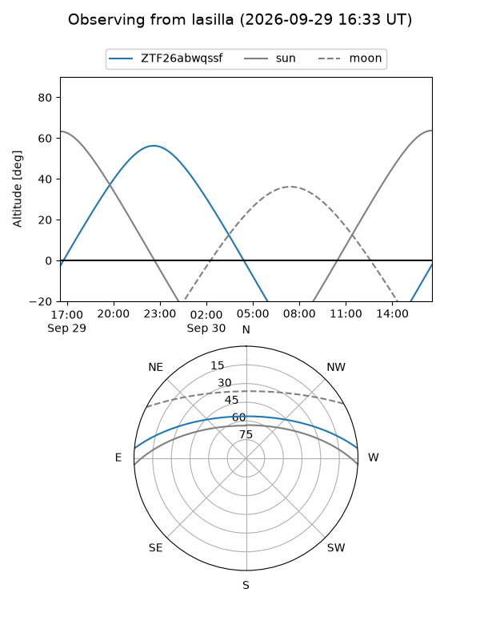
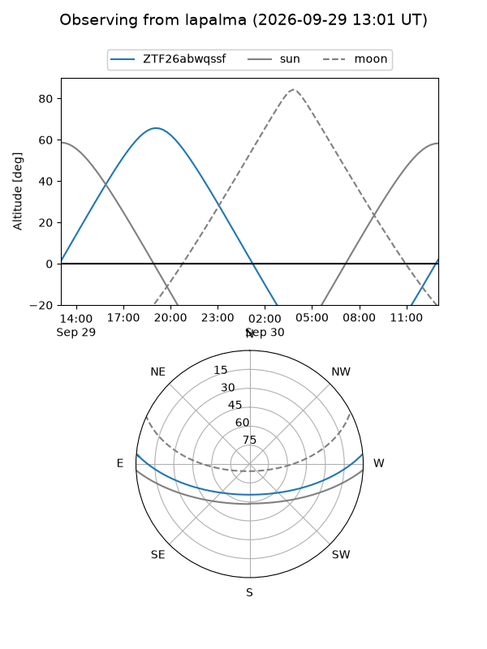
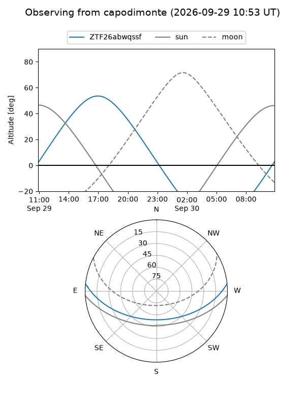
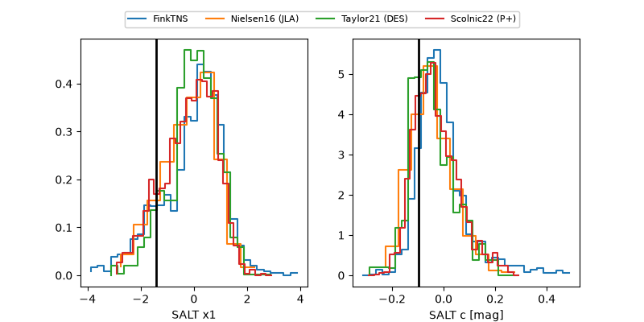

ZTF26abwqssf
Target ZTF26abwqssf at 2026-09-30 04:08
Aliases and brokers:
FINK-ZTF: ztf.fink-portal.org/ZTF26abwqssf
Lasair-ZTF: lasair-ztf.lsst.ac.uk/objects/ZTF26abwqssf
ALeRCE-ZTF: alerce.online/object/ZTF26abwqssf
Direct TNS query: direct search
alt names
ZTF26abwqssf (ztf,fink_ztf)
Coordinates:
equatorial (ra, dec) = 276.5457,+4.44211
equatorial (HMS+DMS) = 18:26:10.97,+04:26:31.61
galactic (l, b) = (34.0267,+7.63705)
Flags:
peak dt: +13.9
likely cv: !!
Photometry:
last atlaso=17.74, ztfg=18.61, ztfr=18.20
1 atlaso, 7 ztfg, 3 ztfr detections
Lightcurve

Visibility



Additional plots
